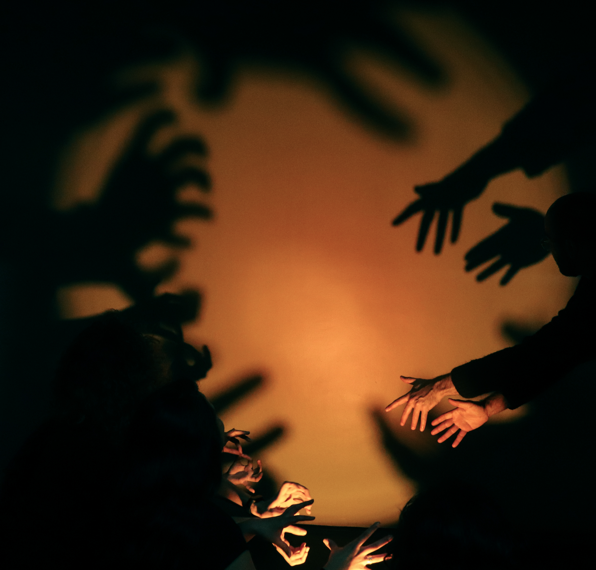
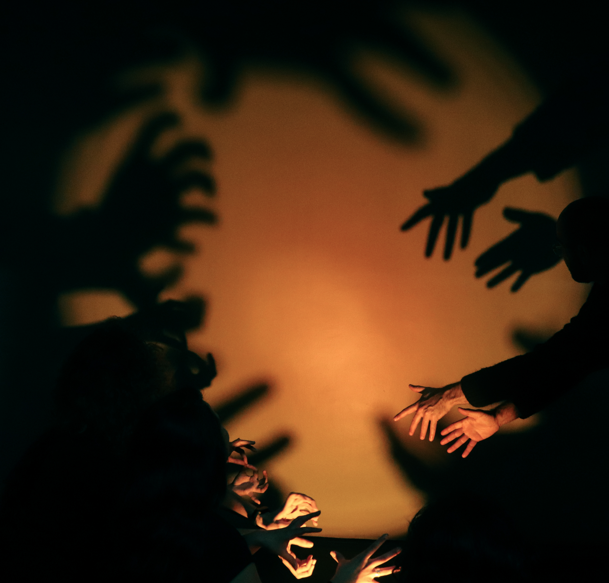

“Sonhário Vivo” é um coletivo que surgiu a partir do projeto Labmais Sesc Consolação. Durante os encontros, recebemos orientações de arte educadores que trouxeram o sonho como material de pesquisa e criação. Nesse espaço, construímos um saber coletivo, dividindo experiências, registrando e compartilhando nossos sonhos através de diferentes suportes: corpo, cena, som e imagens.